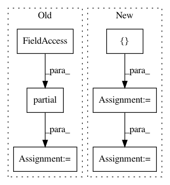

d39a96438f653fca7882ae558bf84f103b835f0b,QUANTAXIS/QAFactor/data.py,DataApi,get_groupby,#DataApi#Any#Any#Any#Any#Any#Any#,221
Before Change
stock_list = utils.QA_fmt_code_list(code_list, style="jq")
df_local = pd.DataFrame()
industries = map(
partial(jqdatasdk.get_industry,
stock_list),
date_range
)
industries = {
d: {
s: ind.get(s).get(industry_cls,
dict()).get("industry_name",
"NA")
for s in stock_list
}
for d,
ind in zip(date_range,
industries)
}
df_local = pd.DataFrame(industries).T.sort_index()
df_local.columns = df_local.columns.map(lambda x: x[0:6])
df_local = df_local.stack(level=-1)
df_local.index.names = ["date", "code"]
return df_local
def get_weights(
After Change
stock_list = utils.QA_fmt_code_list(code_list)
df_local = pd.DataFrame()
for cursor_date in date_range:
df_tmp = QA_fetch_industry_adv(code=code_list, cursor_date = cursor_date)[["code", "industry_name"]]
df_tmp["date"] = cursor_date
df_local = df_local.append(df_tmp)
// industries = map(
// partial(jqdatasdk.get_industry,
// stock_list),
// date_range
In pattern: SUPERPATTERN
Frequency: 3
Non-data size: 6
Instances
Project Name: QUANTAXIS/QUANTAXIS
Commit Name: d39a96438f653fca7882ae558bf84f103b835f0b
Time: 2020-12-20
Author: nehcuh@szu.edu.cn
File Name: QUANTAXIS/QAFactor/data.py
Class Name: DataApi
Method Name: get_groupby
Project Name: tech-srl/code2vec
Commit Name: 89fcfe5f49502043e45de93c47acfc6de2180647
Time: 2019-04-05
Author: eladnah@gmail.com
File Name: keras_model.py
Class Name: Code2VecModel
Method Name: _create_metrics_for_keras_model
Project Name: aertslab/pySCENIC
Commit Name: 5b824f9124e8690ce35118cb2ab8ecfe61fad8cc
Time: 2018-02-06
Author: vandesande.bram@gmail.com
File Name: src/pyscenic/regulome.py
Class Name:
Method Name: derive_regulomes